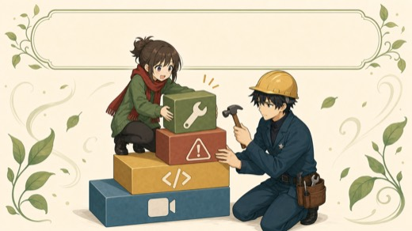
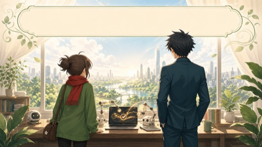

AIにコードを書いてもらう。自分でタイピングしなくていい。
エラーはAIへ渡す材料。止まり方と再開の型がわかれば折れない。
「毎日あの作業」を1個選んで、ボタン1つに近づけるところまで。
各章のポイント
序章
自動化で変わること ── 昨日もやった「あの作業」を、自動化する話
毎日30分の繰り返し作業が、年間でどれだけ大きいか。まず「自分にも関係ある」と思えるところから始めます。
「自動化で変わること」→購入特典
5つの特典を受け取る ── GPTs・スターターキット・全文md
ネタ出しGPTs、スターターキット、購入者チャット、14日間メール講座、AIに読み込ませて使える全文mdを受け取れます。
「購入特典を受け取る」→準備編
道具を揃える ── 準備編：道具を揃える
Codex・Claude Code・Antigravity のどれかを選び、Playwright を動かせる状態にします。最初のAIニュース便まで進みます。
「環境構築、構えなくていい」→知識編
どんな作業が自動化できるか ── 5つの道具と5つの判定軸
Playwright、MCP、AI親和拡張などを、業務の種類に合わせて選ぶための地図です。規約や安全ラインもここで整理します。
「迷わなくなる使い分けの地図」→
方法編
AIに作らせる ── 録る・作る・直す・育てる
業務を録画してAIに渡し、最小版を作り、動かしながら直し、壊れても再開できる形に育てます。
「完成までの道筋が見える型」→直し方
詰まった時にはここ ── エラーと壊れたときの直し方
自動化は止まるのが普通です。止まったときに慌てず、状況を残してAIに渡し、抜けるための考え方をまとめます。
「続けられる人の習慣」→実例集
4フェーズの型を、実際の仕事で動かす
管理画面入力、音声配信アップロード、Substack、Gmail請求書PDF収集など、実際の仕事で作った自動化を公開します。
「実例を見る」→辞典編
そのまま貼れるプロンプト辞典 ── 詰まったときに引く場所
ボタンが押せない・フォームが反映されない・ページが遷移しない。よくある詰まりパターンのプロンプトをコピペで使えるようにまとめました。専門用語がわからなくても、そのままAIに貼れます。
「コピペするだけで伝わる辞典」→
終章
これからの話 ── 自分専用の自動化アシスタントへ
教材を読み終えたあと、実務の中でAIと一緒に自動化を育て続けるための考え方をまとめます。
「これからの話」→FAQ
よくある質問
本当にプログラミング知識ゼロでも大丈夫ですか?
大丈夫です。ペスハム自身、Pythonの文法は今も知りません。「コピペできる」「AIに状況を伝えられる」だけで完成します。ただし、Macでアプリをインストールしたことがある・Webサービスのアカウントを作ったことがある程度のITリテラシーは必要です。
月額いくらかかりますか?
ChatGPTかClaudeの有料プランが必要です。目安は月20ドル前後（約3,000円）。Python・Playwright・デスクトップアプリは無料です。APIキー利用時は別途従量課金が発生する場合があります。料金画面と利用上限を確認し、小さな作業から試してください。
Windowsでもできますか?
Windowsでも可能なケースはありますが、この教材はMacでの実例が中心です。Windowsユーザーはまず「Windows向けに手順を書き換えて」とCodexかClaude Codeに頼んでください。Windows編は今後補足予定です。
どんな業務が自動化できますか?
「ブラウザでやっている繰り返し作業」はかなりの部分が対象になります。管理画面へのフォーム入力、ファイルアップロード、データの転記、複数サイトをまたぐ同じ操作など。スマホアプリ専用の操作や、物理的な作業には対応できません。
CAPTCHAが出るサイトも自動化できますか?
ログインとCAPTCHAは人間が手動で対応する前提にしてください。ログイン後のアップロード・入力・保存など、CAPTCHAが出ない範囲の定型作業を自動化する分担が現実的です。
利用規約違反になりませんか?
サービスごとに規約が違います。自動アクセス・bot・データ取得・大量送信が禁止されていればNGになり得ます。まずは自分のアカウント内の少量の定型作業から始め、公式APIがある場合はそちらを優先してください。
サイトのデザインが変わったら壊れますか?
壊れます。これは自動化ツールの宿命です。ただし修正は最初の作成時より圧倒的に速いです。CodexかClaude Codeに「動かなくなった」と伝えるだけで、かなり早く直せます。
どうしても詰まった場合は相談できますか?
購入者向け公式LINEで相談できます。
https://lin.ee/wzvCa0v
エラー文・スクショ・OS・どこまで進んだかを添えてください。